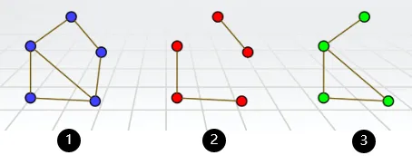

05 Graph Theory
Introduction¶
Seven Bridges Problem
For more information you can see:Seven Bridges Problem

formal definitons¶
undirected/directed graph¶
Definitons
Formally, a (undirected) graph is defined by a set of vertices V and a set of edges E. The vertices correspond to the little circles in Figure 1 above, and the edges correspond to the line segments between the vertices. In Figure 1, V = {A,B,C,D} and E = {{A,B},{A,B},{A,C},{B,C},{B,D},{B,D},{C,D}}. However, note that here E is a multiset (a set where an element can appear multiple times). This is because in the Königsberg example there are multiple bridges between a pair of banks. We will generally not consider such a situation of multiple edges between a single pair of vertices, so in our definition, we require E to be a set, not a multi-set. What this means is that between any pair of vertices there is either 0 or 1 edge. If there are multiple edges between a pair of vertices, then we collapse them into a single edge.
More generally, we can also define a directed graph. If an edge in an undirected graph represents a street, then an edge in a directed graph represents a one-way street. To make this formal, let V be a set denoting the vertices of a graph G.
For example, we can have V = {1,2,3,4}. Then, the set of (directed) edges E is a subset of V ×V, i.e. E ⊆ V ×V. (Recall here that U ×V denotes the Cartesian product of sets U and V, defined as U ×V = {(u, v) : u ∈ U and v ∈V}.) Continuing with our example, let E = {(1,2),(1,3),(1,4)}. Then, the corresponding graph is given below.
We conclude that a graph is thus formally specified as an ordered pair G = (V,E) , where V is the vertex set and E is the edge set.

degree¶
-
If G is undirected, then the degree of vertex u ∈ V is the number of edges incident to u, i.e., degree(v)/d(v) = |{v ∈ V : {u, v} ∈ E}|. A vertex u whose degree is 0 is called an isolated vertex, since there is no edge which connects u to the rest of the graph.
-
A directed graph, on the other hand, has two different notions of degree due to the directions on the edges. Specifically, the in-degree d-(v) of a vertex u is the number of edges from other vertices to u, and the out-degree d+(v) of u is the number of edges from u to other vertices.
-
if d(v) == 1, we name this node "pendant node".
-
if : for every v ∈ V, d(v) is same to others, then we call this graph "regular graph".
for example, G 2 (shown above) is a regular graph.
Paths, walks, and cycles¶
paths: Let G = (V,E) be an undirected graph. A path in G is a sequence of edges {v1, v2},{v2, v3},...,{vn−2, vn−1},{vn−1, vn}. In this case we say that there is a path between v1 and vn.

cycles: In this class, we assume a path is simple, meaning v1,..., vn are distinct. if you wanted drive from house 1 to 3 via house 2, why would you visit house 2 more than once? A cycle (or circuit) is a sequence of edges {v1, v2},{v2, v3},...,{vn−2, vn−1},{vn−1, vn},{vn, v1}, where v1,..., vn are distinct.
walk: Suppose now that your aim is not to go from 1 to 3 as quickly as possible, but to take a leisurely stroll from 1 to 3 via the sequence {1,2},{2,1},{1,4},{4,3}. A sequence of edges with possibly repeated vertices, such as this one, is called a walk from 1 to 3.
Analogous to the relationship between paths and cycles, a tour is a walk which starts and ends at the same vertex. For example, {1,2},{2,3},{3,1} is a tour.

just understand them and you don't have to remember the concepts of them.
Connectivity: A graph is said to be connected if there is a path between any two distinct vertices.
 Note that any graph (even a disconnected one) always consists of a collection of connected components, i.e., sets V1,...,Vk of vertices, such that all vertices in a set Vi are connected. For example, the graph above is not connected, but nevertheless consists of three connected components: V1 = {1,2,3}, V2 = {4}, and V3 = {5,6,7}.
Note that any graph (even a disconnected one) always consists of a collection of connected components, i.e., sets V1,...,Vk of vertices, such that all vertices in a set Vi are connected. For example, the graph above is not connected, but nevertheless consists of three connected components: V1 = {1,2,3}, V2 = {4}, and V3 = {5,6,7}.
subgraph¶
-
G1=
-
V1⊆V2，E1⊆E2，称 G1 是 G2 的 子图 (subgraph)
-
如果 G1 是 G2 的子图，且 G1≠G2，则 G1 是 G2 的 真子图
-
如果 G1 是 G2 的子图，且 V1=V2，则 G1 是 G2 的 生成子图 (spanning subgraph)
例如，下方 2 为 1 的生成子图，3 为 1 的真子图 
complement graph¶
-
G1=
-
V1=V2，E1∩E2=∅，
例如，1 为完全图， 2、3 互为补图

isomorphic¶
设 G1=
例如，下面两个图同构

Revisiting the Seven Bridges of Koenigsberg: Eulerian Tours¶
Given a graph G(namely Seven Bridges Problem), is there a walk in G that uses each edge exactly once? We call any such walk in a graph an Eulerian walk. (In contrast, by definition a walk can normally visit each edge or vertex as many times as desired.)
Moreover, if an Eulerian walk is closed, i.e., it ends at its starting point, then it is called an Eulerian tour.
For this, define an even degree graph as a graph in which all vertices have even degree.
Theorem 5.1 (Euler’s Theorem (1736))
An undirected graph G = (V,E) has an Eulerian tour iff G is even degree, and connected (except possibly for isolated vertices).
Proof
其实很简单，根据题意，我们每条边都要走且只走一遍
Only if :如果某个端点（非起点）有奇数条边，那总会有那么一个时刻进去了出不来；对于起点，那就是有一个时刻出去了没法进来；总之反证法可得
if : 我们可以改为证明 FindTour(G, s)
FINDTOUR is very simple: In even degree graph, it just starts walking from a vertex s ∈ V, at each step choosing any untraversed edge incident to the current vertex, until it gets stuck because there is no more adjacent untraversed edge.
证明同样简单，如果卡在 t != s 处，那么说明进出 t 的次数是奇数，这与 even degree graph 定义相矛盾，故 t == s，也就是说一定会返回原点。
For more information such as algorithm EULER(G, s), you can visit Fleury's algorithm & Hierholzer's algorithm
Planarity, Euler’s Formula, Coloring.¶
Tree¶
Just like what we learn in Data Struct, so we pass it.
Planar Graphs¶
A graph is planar if it can be drawn on the plane without crossings.
Just understand what "can" stands for since the first and second graphs below are the same, but drawn differently; the second drawing has crossings, the graph is still considered planar since it is possible to draw it without crossings.

The first one of them is the infamous “three houses-three wells graph,” also called K3,3, (This notation says there are two sets of vertices, each of size three and all edges between the two sets of vertices are present.) The second is the “complete” graph (every edge is present) with five nodes, or K5. The third is the four-dimensional cube. We shall soon see how to prove that all three graphs are non-planar.

If we define graph's vertices (their number will be denoted v here) and edges (their number is e), the faces of the graph (more precisely, of the drawing). The faces are the regions into which the graph subdivides the plane, then goes Euler's formula:
Theorem 5.2 (Euler’s formula)
For every connected planar graph, v+ f = e+2
Proof by induction on e
It certainly holds when e = 0, and v = f = 1. Now take any connected planar graph. Two cases:
• If it is a tree, then f = 1 (drawing a tree on the plane does not subdivide the plane), and e = v − 1 (check homework).
• If it is not a tree, find a cycle and delete any edge of the cycle. This amounts to reducing both e and f by one. By induction the formula is true in the smaller graph, and so it must be true in the original one.
If we define \(s_i\) as the number of edges of face_i, then we get that:
It is easy to learn that \(s_i\) >= 3, solving for f and plugging into Euler’s formula we get e ≤ 3v−6.
This is an important fact, which helps us to konw that \(K_{5}\) is not planar.
What about \(K_{3,3}\) ?
As we can see in \(K_{3,3}\) , there is no triangle so \(s_i\) >= 4 , which turns out to be that: e ≤ 2v−4, so \(K_{3,3}\) is not planar.
This is made precise in the following famous result, due to the Polish mathematician Kuratowski (this is what “K” stands for)
Theorem 5.3
A graph is non-planar iff it contains \(K_{5}\) or \(K_{3,3}\) .
Proof
for a short proof you may want to type “proof of Kuratowski’s theorem” in your favorite search engine
Important classes of graphs¶
就像互联网一样，我们希望任何一个节点都能够访问到其余任何一个节点，这就要求我们的图是彼此连接的。但是连接太少（如 Trees 或者 link）会导致一处连接中断而大片失联；连接过多（如每一个节点都直接连接其他所有节点，即 Complete graphs）又在成本和复杂度上不切实际；因此，我们需要一个很好地结合双方特点的图形结构，即超立方体(hypercubes)。下面我们详细介绍三者
Complete graphs¶
As we can see, complete graphs contain the maximum number of edges possible.
Here, the notation Kn denotes the unique complete graph on n vertices.
Formally, we can write Kn = (V,E) for |V| = n and E = {{vi , vj} | vi ̸= vj and vi , vj ∈ V} in undirected graphs.

Finally, we can also discuss complete graphs for directed graphs, which are defined as you might expect: For any pair of vertices u and v, both (u, v),(v,u) ∈ E.
Trees¶
Formally, there are a number of equivalent definitions of when a graph G = (V,E) is a tree, including:
-
G is connected and contains no cycles.
-
G is connected and has n−1 edges (where n = |V|).
-
G is connected, and the removal of any single edge disconnects G.
-
G has no cycles, and the addition of any single edge creates a cycle.

In a rooted tree, there is a designated node called the root, which we think of as sitting at the top of the tree. The bottom-most nodes are called leaves, and the intermediate nodes are called internal nodes.
Note that in a rooted tree, a root is never a leaf. In particular, this differs from an unrooted tree; in an unrooted tree, leaves are any vertex of degree 1.
Then goes the same as what we learn in Data Struct, so we pass it.
Hypercubes¶
definition¶
direct definitions
The vertex set of the n-dimensional hypercube G = (V,E) is given by V = \(\{0,1\}^{n}\) , where recall \(\{0,1\}^{n}\) denotes the set of all n-bit strings. In other words, each vertex is labeled by a unique n-bit string, such as 00110···0100. The edge set E is defined as follows: Two vertices x and y are connected by edge {x, y} if and only if x and y differ in exactly one bit position.
For example, x = 0000 and y = 1000 are neighbors, but x = 0000 and y = 0011 are not. More formally, x = x1x2 ... xn and y = y1y2 ... yn are neighbors if and only if there is an i ∈ {1,...,n} such that \(x_{j} = y_{j}\) for all \(j \neq i\), and \(x_{i} \neq y_{i}\) .
To help you visualize the hypercube, we depict the 1-, 2-, and 3-dimensional hypercubes below.

This kind of struct is useful in Karnaugh map .
recursive definitions
Define the 0-subcube (respectively, 1-subcube) as the (n−1)-dimensional hypercube with vertices labeled by 0x for x ∈ {0,1} n−1 (respectively, 1x for x ∈ {0,1} n−1 ). Then, the n-dimensional hypercube is obtained by placing an edge between each pair of vertices 0x in the 0-subcube and 1x in the 1-subcube.
我们通过上面的图一到图二来理解：
在图一中有两个节点：0 和 1，这其实就是上面所谓的 x，我们在前面一一分别加上 0 和 1，也就上面所谓的 0 x、1 x ，一共会出现了 4 个节点：00、01；10、11 。且我们应该将 0 x 与对应的 1x 之间加上边，这样构成了图二
同理由图二构成图三，递归定义
We began this section by singing praises for the hypercube in terms of its connectivity properties; we now investigate these claims formally. Let us begin by giving two proofs of a simple property of the hypercube. Each proof relies on one of our two equivalent (namely, direct and recursive) definitions of the hypercube.
Lemma 5.1
The total number of edges in an n-dimensional hypercube is \(n 2^{n-1}\) .
proof 2 can be got by induction
Theorem 5.4
Let S ⊆ V be such that |S| ≤ |V −S| (i.e., that |S| ≤ 2 n−1 ), and let ES denote the set of edges connecting S to V −S, i.e., \(\(E_{S} := \{\{u, v\} ∈ E | u ∈ S \land v ∈ V −S\}\)\) Then, it holds that | \(E_{S}\) | ≥ |S|.
Proof (Haven't got it yet)
We proceed by induction on n. Base case (n = 1): The 1-dimensional hypercube graph has two vertices 0 and 1, and one edge {0,1}. We also have the assumption |S| ≤ 2 1−1 = 1, so there are two possibilities. First, if |S| = 0, then the claim trivially holds. Otherwise, if |S| = 1, then S = {0} and V −S = {1}, or vice versa. In either case we have ES = {0,1}, so |ES| = 1 = |S|. Inductive hypothesis: Assume the claim holds for 1 ≤ n ≤ k. Inductive step: We prove the claim for n = k + 1. Recall that we have the assumption |S| ≤ 2 k . Let S0 (respectively, S1) be the vertices from the 0-subcube (respectively, 1-subcube) in S. We have two cases to examine: Either S has a fairly equal intersection size with the 0- and 1-subcubes, or it does not.
Case 1: |S0| ≤ \(2^{k-1}\) and |S1| ≤ \(2^{k-1}\) .
In this case, we can apply the induction hypothesis separately to the 0- and 1-subcubes. This says that restricted to the 0-subcube itself, there are at least |S0| edges between |S0| and its complement (in the 0-subcube), and similarly there are at least |S1| edges between |S1| and its complement (in the 1-subcube). Thus, the total number of edges between S and V −S is at least |S0|+|S1| = |S|, as desired. 2.
Case 2: |S0| > \(2^{k-1}\)
In this case, S0 is unfortunately too large for the induction hypothesis to apply. However, note that since |S| ≤ 2 k , we have |S1| = |S|−|S0| ≤ 2 k−1 , so we can apply the hypothesis to S1. As in Case 1, this allows us to conclude that there are at least |S1| edges in the 1-subcube crossing between S and V −S. What about the 0-subcube? Here, we cannot apply the induction hypothesis directly, but there is a way to apply it after a little massaging. Consider the set V0 −S0, where V0 is the set of vertices in the 0-subcube. Note that |V0| = 2 k and |V0 −S0| = |V0|−|S0| = 2 k −|S0| < 2 k −2 k−1 = 2 k−1 . Thus, we can apply the inductive hypothesis to the set V0 − S0. This yields that the number of edges between S0 and V0 −S0 is at least 2k − |S0|. Adding our totals for the 0-subcube and the 1-subcube so far, we conclude there are at least 2k − |S0|+|S1| crossing edges between S and V −S. However, recall our goal was to show that the number of crossing edges is at least |S|; thus, we are still short of where we wish to be. But there are a still edges we have not accounted for — namely, those in ES which cross between the 0- and 1-subcubes. Since there is an edge between every vertex of the form 0x and the corresponding vertex 1x, we conclude there are at least |S0| − |S1| edges in ES that cross between the two subcubes. Thus, the total number of edges crossing is at least 2k −|S0|+|S1|+|S0| −|S1| = 2 k ≥ |S|, as desired.
de Bruijn sequence¶
A de Bruijn sequence is a 2n -bit circular sequence such that every string of length n occurs as a contiguous substring of the sequence exactly once.
For example, the following is a de Bruijn sequence for the case n = 3: